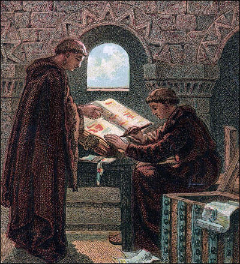

IN THE BEGINNING
I was born in St. Louis 3.1 decades ago. The Guilliams family name is not very common. Originally it was a french name -- William.
THEN
Some other William, way back when, decided he had enough of France. He headed over to england on a boat, but at that time the southeast part of england was a french english mix, known as welsh. Thus my name turned from William into a welsh name, like Guillaume. This is probably what his boat looked like when he made the trip.

THEN YET AGAIN
Some other Guillaume, years later, decided he'd had about enough of england too. He wanted to get out and see the world, and make a dangerous trip across the ocean. Not to be < the travellers before him, he got a bigger boat, this time to go across the ocean. If i had to guess, since they didn't have airplanes at the time, he probably got a pirate boat. That's what I woulda bought.

He went too....
Well..... somehow he wound up on the east coast of the USoA. Weary after many months of sailing, he probably didn't navigate to well, and he also probably misspelled our name upon arrival, or maybe it just changed again over the centuries.

FINALLY
Guillaume turned to its current day spelling, of Guilliams. Interestingly, to avoid confusion when i call in for pizza hut -- I use the original french name of Williams, instead of Guilliams. This makes the job of the pizza delivery folks much, much easier.